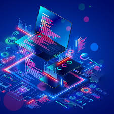

We take great satisfaction in our ability to connect with both partners and customers via this website. Our proficiency spans website development and software programming, reflecting our expert knowledge in these domains. Furthermore, we excel at delivering branding solutions and fostering creative enhancements for companies and brands across all tiers.
DAVID TYRON NANA KOJO MENSAH
At DKM INDUSTREIS, we're dedicated to bringing your digital visions to life. Our team of seasoned professionals specializes in crafting innovative and user-friendly websites that stand out in today's competitive online landscape. What sets us apart: Cutting-Edge Solutions: Our experts are at the forefront of web programming and development trends. We harness the latest technologies to create websites that are not only visually stunning but also highly functional. Customization at its Best: We understand that every business is unique. That's why we offer tailored solutions that align with your specific goals and requirements. From e-commerce platforms to dynamic corporate sites, we've got you covered. User-Centric Design: User experience is our top priority. Our websites are designed with your audience in mind, ensuring seamless navigation and engagement across all devices. Reliable Support: Our commitment doesn't end with the launch. We provide ongoing support and maintenance to keep your website running smoothly and securely. Results-Driven Approach: We don't just build websites; we build online experiences that drive results. Whether it's increased traffic, higher conversion rates, or improved brand visibility, our solutions are geared towards your success. Experience the power of exceptional website programming and development at. Let's transform your online presence together. Visit us at dre_tutorial or contact us at (0558594999/0575455086) to learn more and get started on your digital journey today!
Unlock Innovation and Shape the Digital Future with Our Programming Department! Are you ready to harness the power of technology to drive your business forward? Look no further than our cutting-edge Programming Department. With a team of highly skilled and creative programmers, we specialize in crafting bespoke solutions tailored to your unique needs. 🚀 Why Choose Our Programming Department? 🚀 Expertise that Delivers Results: Our seasoned programmers are adept at transforming concepts into reality. From web and mobile applications to automation solutions, we turn your ideas into functional, elegant, and efficient software. Innovation at the Core: Stay ahead in the digital race with our innovative mindset. We thrive on exploring new technologies, programming languages, and frameworks to create solutions that push the boundaries of what's possible. Collaborative Approach: We believe in the power of collaboration. Our programmers work closely with you to understand your goals, provide insights, and ensure that the end product aligns perfectly with your vision. Agile and Adaptable: The tech landscape evolves rapidly, and so do we. Our agile development approach allows us to adapt to changes quickly, ensuring your project remains relevant and effective in today's dynamic business environment. Custom Solutions, Every Time: One size doesn't fit all. Our Programming Department takes pride in crafting tailor-made solutions that cater to your specific requirements. Your success is our success. Unparalleled Support: Our commitment doesn't end with project delivery. We offer comprehensive post-launch support, updates, and maintenance to keep your software running seamlessly. Embrace the future with confidence. Partner with our Programming Department and turn your aspirations into achievements. Get in touch today to explore the possibilities!" Remember to personalize the statement with specific details about your company's programming team, accomplishments, and the services you offer.
Mastering Excellence, Elevating Broadcasting: Discover the Power of Our Master Control Department! At the heart of seamless broadcasting lies our state-of-the-art Master Control Department. We bring precision, innovation, and unwavering reliability to every aspect of content delivery, ensuring your audience experiences nothing short of perfection. 📡 Why Choose Our Master Control Department? 📡 Precision in Every Pixel: Our meticulous attention to detail guarantees that your content is flawlessly prepared and delivered. From video quality to audio consistency, we set the gold standard for precision in broadcasting. 24/7 Reliability: Broadcasting never sleeps, and neither do we. Our Master Control team operates around the clock to keep your content airing without a hitch. Trust us to be your steadfast partner in delivering uninterrupted entertainment. Cutting-Edge Technology: We're ahead of the curve when it comes to technology adoption. Our Master Control Department is equipped with the latest tools and systems, ensuring that your content is presented in the best possible light. Adaptive Solutions: Every network has unique requirements. Our team excels in tailoring solutions to fit your specific needs, whether it's live events, pre-recorded shows, or scheduling intricacies. Seamless Workflow: We streamline complex processes, making them look effortless. Our seamless workflow management minimizes disruptions, enabling you to focus on content creation while we handle the technical complexities. Collaborative Expertise: Our Master Control team isn't just about technology; it's about people who understand the art of broadcasting. We collaborate closely with your team to ensure a unified vision and flawless execution. Future-Ready Broadcasting: As the broadcasting landscape evolves, we stay ahead of the curve. Count on us to implement future-ready solutions that keep you at the forefront of innovation. Join hands with the masters of broadcasting. Experience unparalleled quality and reliability with our Master Control Department. Let's redefine broadcasting, together. Get in touch today to explore the possibilities!" Remember to personalize the statement with specific details about your company's Master Control Department, its capabilities, success stories, and how it stands out in the broadcasting industry.
"Connecting Possibilities, Powering Progress: Unleash the Potential of Our Networking Department! In a world driven by connectivity, our Networking Department stands as the backbone of seamless communication and technological advancement. We craft networks that empower businesses to thrive in the digital age, delivering unparalleled performance and reliability. 🌐 Why Choose Our Networking Department? 🌐 Engineering Connectivity: We don't just build networks; we engineer pathways to possibility. Our Networking Department excels in designing, implementing, and optimizing networks that fuel your operations and drive growth. Reliability Beyond Measure: Your operations demand unwavering reliability, and that's exactly what we provide. Our expert team creates robust and redundant networks that ensure your business stays connected, no matter the circumstances. Scalable Solutions: As your business evolves, so should your network. Our solutions are designed with scalability in mind, accommodating your changing needs while maintaining performance and security. Cutting-Edge Technology: We're at the forefront of networking technology. From traditional setups to cutting-edge solutions like SD-WAN and IoT integration, our team ensures you're equipped with the best tools for success. Security as a Priority: In today's digital landscape, security is non-negotiable. Our Networking Department integrates robust security measures into every network architecture, safeguarding your data and operations from threats. Collaborative Approach: Your business insights, our networking expertise – the perfect synergy. We collaborate closely with your team to understand your unique challenges and devise tailor-made networking solutions. Support that Matters: Our commitment extends beyond implementation. We offer ongoing monitoring, support, and updates to keep your network optimized and performing at its peak. Elevate your connectivity experience. Partner with our Networking Department to propel your business into a future driven by seamless communication, innovation, and growth. Let's shape a connected world together. Connect with us today!" Make sure to customize the statement with specific details about your company's Networking Department, its achievements, notable projects, and the diverse range of networking solutions you offer.


CHEIF EXECUTIVE OFFICER
IT SPECIALIST